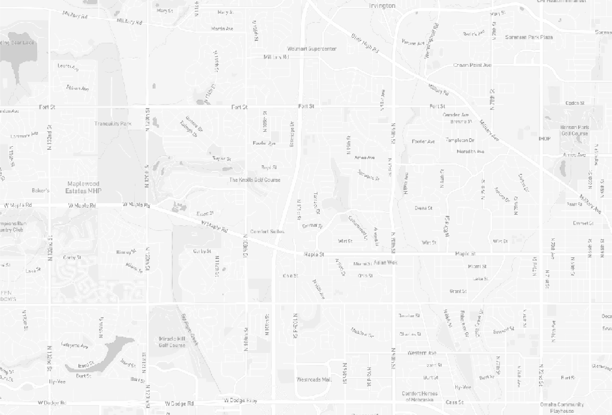
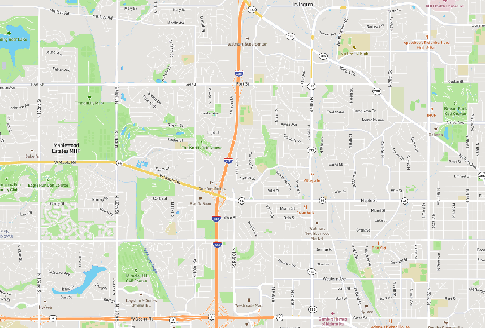
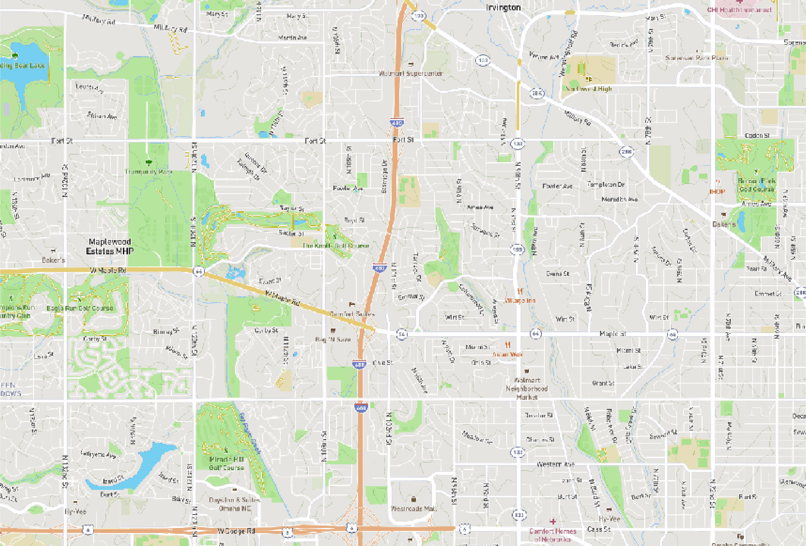

This short vignette demonstrates the three map styles available in the ms_generate_map() function. These correspond to three of the styles provided by mapbox, converted to black and white format for use with mapscanner. The styles are demonstrated here using the same area of Omaha, Nebraska, U.S.A., defined as the bounding box provided by the osmdata::getbb() function, shrunk to 30% of it’s size.
bb <- osmdata::getbb ("omaha nebraska")
shrink <- 0.3 # shrink that bounding box to 30% size
bb <- t (apply (bb, 1, function (i)
mean (i) + c (-shrink, shrink) * diff (i) / 2))
bb## [,1] [,2]
## x -96.12923 -96.01011
## y 41.26145 41.32220The following illustrates the three different styles enabled by the style parameter of the ms_generate_map() function.
style = ‘light’
The “light” style is the only monochrome style, and so is always rendered black-and-white.
ms_generate_map (bbox = bb,
max_tiles = 16L,
mapname = "omaha-light",
style = "light")## Successfully generated 'omaha-light.pdf' and 'omaha-light.png'
style = ‘streets’
Both the “streets” and the following “outdoors” styles are coloured maps, rendered here with bw = FALSE. These maps may be easier to draw on if generated with the default bw = TRUE.
ms_generate_map (bbox = bb,
max_tiles = 16L,
mapname = "omaha-streets",
style = "streets",
bw = FALSE)## Successfully generated 'omaha-streets.pdf' and 'omaha-streets.png'
style = ‘outdoors’
ms_generate_map (bbox = bb,
max_tiles = 16L,
mapname = "omaha-outdoors",
style = "outdoors",
bw = FALSE)## Successfully generated 'omaha-outdoors.pdf' and 'omaha-outdoors.png'